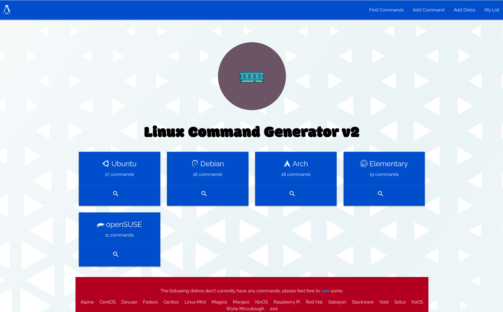

GetHubby: A dating site for developers

Linux Command Generator: A tool for distro-hoppers
Linux Command Generator v2: Revamped tool for distro-hoppers
Hi, I'm
Neal
!
A Full Stack
Python
,
Javascript
, and
Java
developer based in Dublin, Ireland.